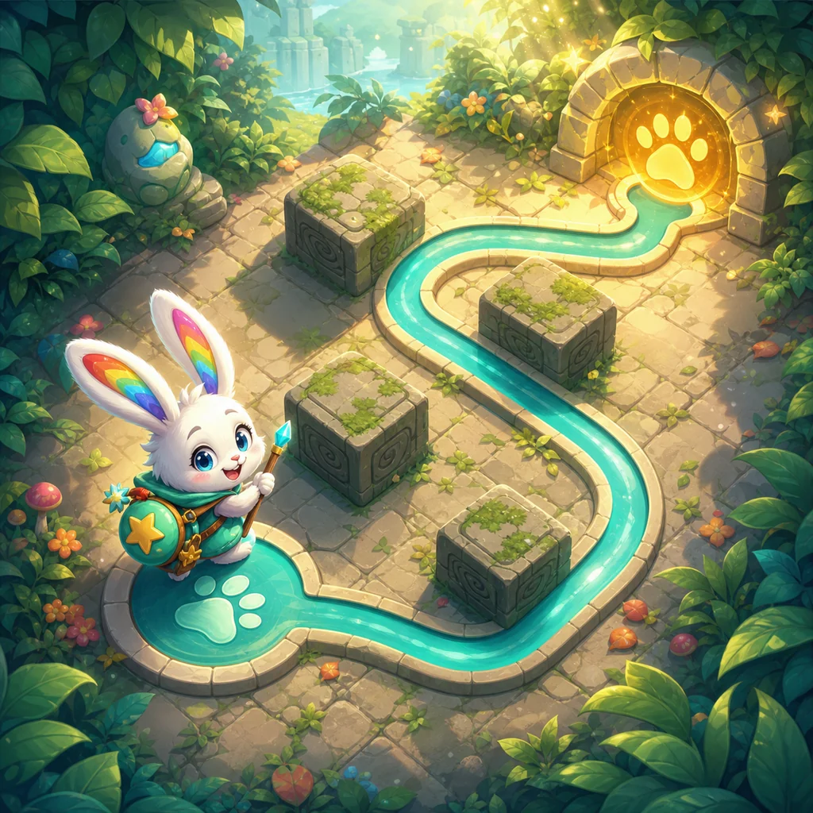
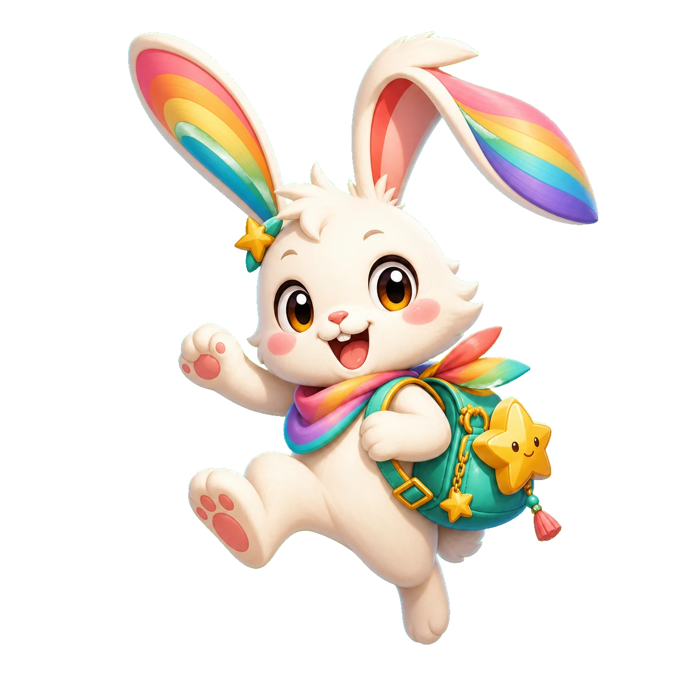

Mimi's color-grid workshop
One Line
Plan one continuous route and fill every open cell without visiting any cell twice.

Plan one continuous route and fill every open cell without visiting any cell twice.
One Line is an original 30-stage continuous tracing game starring Rainbow Hop Mimi. Hold the start seal, guide one unbroken line through the safe trail, and reach the paw portal without touching a wall, crossing a shadow obstacle, or lifting early.
Thirty original routes grow through wide turns, narrow passages, ordered star seals, moving shadows, timing corridors, and five final mastery trails. Retry is free, completed stages remain replayable, and best stars plus times are stored in this browser.
Recommended for ages 9+ and family play. One Line practices hand-eye coordination, focus, and route control through play. It requires no account and uses no formal ability ranking.
